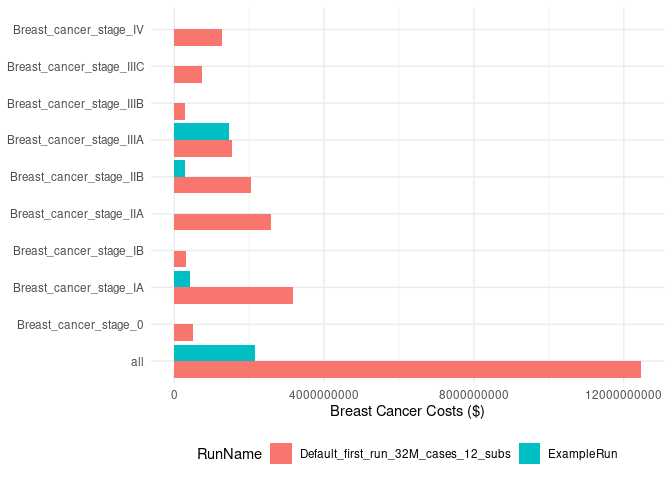

The goal of oncosimx is to provide a programmatic interface to the OncoSimX web-based platform directly from R to simplify creating scenarios, running models, and gathering results for further processing.
Installation
You can install the development version of oncosimx from GitHub with:
# install.packages("remotes")
remotes::install_github("oncology-outcomes/oncosimx")Usage
The oncosimx package contains many functions that provide access to nearly every OpenM++ API endpoint. However, users will typically only use a smaller set of functions for most common tasks.
User Authentication
Each user is required to set their local host address for the OpenM++ API in their global or project-specific .Renviron file in order for the oncosimx package to communicate with the API on behalf of the user. To do this, set the ONCOSIMX_HOST environment variable in your .Renviron file as follows:
ONCOSIMX_HOST=http://localhost:XXXXWhere XXXX is the four digits corresponding to your specific local host address. If you aren’t sure of your host address, you may contact the OpenM++ administrator to retrieve this information.
Main Functions
-
Functions for accessing tables of models, worksets, or model runs
-
Functions for creating new worksets or scenarios
-
Functions for loading models, worksets, or model runs
-
Functions for deleting worksets or model runs
Models, Scenarios, Runs, and RunSets
There are 4 main classes you will work with when using the oncosimx package: OncoSimXModel, OncoSimXWorkset, OncoSimXModelRun, and OncoSimXModelRunSet. Each of these are R6 classes. R6 is an encapsulated object-oriented programming system for R. Use the load_*() set of functions to load a model, workset/scenario, model run, or set of model runs into memory.
Instances of each of these 4 classes have methods and fields associated with them. You can access public methods and fields using the standard $ subset operator (e.g., obj$action() or obj$field)
Example
Here we will work through a very simple example of creating a new scenario, extracting parameters to change, running the model, and extracting results. In this example we do not actually change any parameters, but users can edit the extracted CSV files and use workset$upload_params() to upload changed parameters.
Let’s see what models are available:
get_models()
#> # A tibble: 22 × 7
#> ModelId Name Digest Type Version CreateDateTime DefaultLangCode
#> <int> <chr> <chr> <int> <chr> <chr> <chr>
#> 1 101 OncoSimX-allcanc… c1d97… 0 3.6.2.5 2023-11-03 18… EN
#> 2 101 OncoSimX-breast 742b9… 0 3.6.2.5 2023-11-03 18… EN
#> 3 101 OncoSimX-cervical 72c69… 0 3.6.2.5 2023-11-03 19… EN
#> 4 101 OncoSimX-colorec… 6802a… 0 3.6.2.5 2023-11-03 19… EN
#> 5 101 OncoSimX-gmm 46607… 0 3.6.2.5 2023-11-03 19… EN
#> 6 101 OncoSimX-lung f3611… 0 3.6.2.5 2023-11-03 19… EN
#> 7 101 OncoSimX-allcanc… 41146… 0 3.6.2.4 2023-09-20 18… EN
#> 8 101 OncoSimX-breast 55c8b… 0 3.6.2.4 2023-09-20 17… EN
#> 9 101 OncoSimX-cervical bb3b5… 0 3.6.2.4 2023-09-20 18… EN
#> 10 101 OncoSimX-colorec… 36999… 0 3.6.2.4 2023-09-20 18… EN
#> # ℹ 12 more rowsWe can now see what worksets and model runs exist for a given model.
get_worksets('OncoSimX-breast')
#> # A tibble: 2 × 11
#> ModelName ModelDigest ModelVersion ModelCreateDateTime Name BaseRunDigest
#> <chr> <chr> <chr> <chr> <chr> <chr>
#> 1 OncoSimX-bre… 742b985b8c… 3.6.2.5 2023-11-03 18:55:1… Defa… ""
#> 2 OncoSimX-bre… 742b985b8c… 3.6.2.5 2023-11-03 18:55:1… MyNe… "9f9890c641e…
#> # ℹ 5 more variables: IsReadonly <lgl>, UpdateDateTime <chr>,
#> # IsCleanBaseRun <lgl>, Txt <list<tibble[,3]>>, Param <list>
get_runs('OncoSimX-breast')
#> # A tibble: 2 × 21
#> ModelName ModelDigest ModelVersion ModelCreateDateTime Name SubCount
#> <chr> <chr> <chr> <chr> <chr> <int>
#> 1 OncoSimX-breast 742b985b8c3b6… 3.6.2.5 2023-11-03 18:55:1… Defa… 12
#> 2 OncoSimX-breast 742b985b8c3b6… 3.6.2.5 2023-11-03 18:55:1… Exam… 12
#> # ℹ 15 more variables: SubStarted <int>, SubCompleted <int>,
#> # CreateDateTime <chr>, Status <chr>, UpdateDateTime <chr>, RunId <int>,
#> # RunDigest <chr>, ValueDigest <chr>, RunStamp <chr>, Txt <list>,
#> # Opts <list>, Param <list>, Table <list>, Entity <list>, Progress <list>Now we can load the OncoSimX-breast model to inspect.
breast <- load_model('OncoSimX-breast')
breast
#> ── OncoSimX Model ──────────────────────────────────────────────────────────────
#> → ModelName: OncoSimX-breast
#> → ModelVersion: 3.6.2.5
#> → ModelDigest: 742b985b8c3b685b2cd97f17255f5d5fWe will now load the Default set of input parameters for the Breast model.
breast_default <- load_scenario('OncoSimX-breast', 'Default')
breast_default
#> ── OncoSimX Workset ────────────────────────────────────────────────────────────
#> → ModelName: OncoSimX-breast
#> → ModelVersion: 3.6.2.5
#> → ModelDigest: 742b985b8c3b685b2cd97f17255f5d5f
#> → WorksetName: Default
#> → BaseRunDigest:Finally, we will load the base run for the Breast model.
baserun_digest <- breast$ModelRuns$RunDigest[[1]]
breast_baserun <- load_run('OncoSimX-breast', baserun_digest)
breast_baserun
#> ── OncoSimX ModelRun ───────────────────────────────────────────────────────────
#> → ModelName: OncoSimX-breast
#> → ModelVersion: 3.6.2.5
#> → ModelDigest: 742b985b8c3b685b2cd97f17255f5d5f
#> → RunName: Default_first_run_32M_cases_12_subs
#> → RunDigest: 9f9890c641e0c43d5fd439591106f8faWe will create a new scenario based on the parameters from the Default_first_run_32M_cases_12_subs model run.
create_scenario('OncoSimX-breast', 'MyNewScenario', baserun_digest)We will load the new scenario, copy over the ProvincesOfInterest parameter from the base run and extract it to a CSV file for editing.
my_scenario <- load_scenario('OncoSimX-breast', 'MyNewScenario')Let’s only run the simulation for Alberta…
my_scenario$copy_params('ProvincesOfInterest')
alberta_only <- my_scenario$Parameters$ProvincesOfInterest
alberta_only <-
alberta_only |>
mutate(
across(Newfoundland_and_Labrador:NT, \(x) FALSE),
Alberta = TRUE
)
my_scenario$Parameters$ProvincesOfInterest <- alberta_onlyWe will now run the model anyway. We will give it the name 'ExampleRun'. We use the wait = TRUE flag to make sure we want for the model run to finish before returning to our R session. Note that model runs may take a long time when the number of simulation cases is large.
my_scenario$ReadOnly <- TRUE
my_scenario$run('ExampleRun', wait = TRUE, progress = FALSE)Note that we can use the opts argument and the opts_run() function to configure our run. By default, models are run with 5,000 simulation cases and 12 SubValues. This allows for quick model runs and faster iteration, but users will want to increase the number of simulation cases when performing a full model run.
Now that our model run is complete, let’s load it into memory.
example_run <- load_run('OncoSimX-breast', 'ExampleRun')
example_run
#> ── OncoSimX ModelRun ───────────────────────────────────────────────────────────
#> → ModelName: OncoSimX-breast
#> → ModelVersion: 3.6.2.5
#> → ModelDigest: 742b985b8c3b685b2cd97f17255f5d5f
#> → RunName: ExampleRun
#> → RunDigest: fe83202b767917d818cca7cce7502b93We can now extract an output table from this model run using $get_table().
example_run$Tables$Breast_Cancer_Cases_Table
#> # A tibble: 8,177 × 4
#> expr_name Province Year expr_value
#> <chr> <chr> <dbl> <dbl>
#> 1 Incidence_of_i_x_d_DCIS_combined Newfoundland_and_Labrador 2015 0
#> 2 Incidence_of_i_x_d_DCIS_combined Newfoundland_and_Labrador 2016 0
#> 3 Incidence_of_i_x_d_DCIS_combined Newfoundland_and_Labrador 2017 0
#> 4 Incidence_of_i_x_d_DCIS_combined Newfoundland_and_Labrador 2018 0
#> 5 Incidence_of_i_x_d_DCIS_combined Newfoundland_and_Labrador 2019 0
#> 6 Incidence_of_i_x_d_DCIS_combined Newfoundland_and_Labrador 2020 0
#> 7 Incidence_of_i_x_d_DCIS_combined Newfoundland_and_Labrador 2021 0
#> 8 Incidence_of_i_x_d_DCIS_combined Newfoundland_and_Labrador 2022 0
#> 9 Incidence_of_i_x_d_DCIS_combined Newfoundland_and_Labrador 2023 0
#> 10 Incidence_of_i_x_d_DCIS_combined Newfoundland_and_Labrador 2024 0
#> # ℹ 8,167 more rowsGreat, we have created a new scenario, modified some parameters, ran the model, and extracted output tables. In this last step, we will load multiple model runs into memory to compare them.
breast_runs <- load_runs('OncoSimX-breast', breast$ModelRuns$RunDigest)
breast_runs
#> ── OncoSimX ModelRunSet ────────────────────────────────────────────────────────
#> → ModelName: OncoSimX-breast
#> → ModelVersion: 3.6.2.5
#> → ModelDigest: 742b985b8c3b685b2cd97f17255f5d5f
#> → RunNames: [Default_first_run_32M_cases_12_subs, ExampleRun]
#> → RunDigests: [9f9890c641e0c43d5fd439591106f8fa, fe83202b767917d818cca7cce7502b93]We will extract a new table from both models. Note that an extra column, RunName is added to indicate which model run the output table data corresponds to.
cost_bystage <- breast_runs$Tables$Breast_Cancer_Cost_ByStage_Table
cost_bystage
#> # A tibble: 80 × 4
#> RunName expr_name Stage expr_value
#> <chr> <chr> <chr> <dbl>
#> 1 Default_first_run_32M_cases_12_subs Total_treatment_cost Breast_c… 4.95e 8
#> 2 Default_first_run_32M_cases_12_subs Total_treatment_cost Breast_c… 3.17e 9
#> 3 Default_first_run_32M_cases_12_subs Total_treatment_cost Breast_c… 3.17e 8
#> 4 Default_first_run_32M_cases_12_subs Total_treatment_cost Breast_c… 2.59e 9
#> 5 Default_first_run_32M_cases_12_subs Total_treatment_cost Breast_c… 2.06e 9
#> 6 Default_first_run_32M_cases_12_subs Total_treatment_cost Breast_c… 1.54e 9
#> 7 Default_first_run_32M_cases_12_subs Total_treatment_cost Breast_c… 2.77e 8
#> 8 Default_first_run_32M_cases_12_subs Total_treatment_cost Breast_c… 7.54e 8
#> 9 Default_first_run_32M_cases_12_subs Total_treatment_cost Breast_c… 1.27e 9
#> 10 Default_first_run_32M_cases_12_subs Total_treatment_cost all 1.25e10
#> # ℹ 70 more rowsWe can even plot this using ggplot2! Note that the number of simulation cases for ExampleRun is very low so the results are not to be trusted!
cost_bystage |>
ggplot(aes(Stage, expr_value, fill = RunName)) +
geom_col(position = position_dodge()) +
labs(x = NULL, y = 'Breast Cancer Costs ($)') +
coord_flip() +
theme_minimal() +
theme(legend.position = 'bottom')
When we are sure we no longer need a scenario or model run, we can use delete_scenario() or delete_run() to clean things up!
Code of Conduct
Please note that the oncosimx project is released with a Contributor Code of Conduct. By contributing to this project, you agree to abide by its terms.